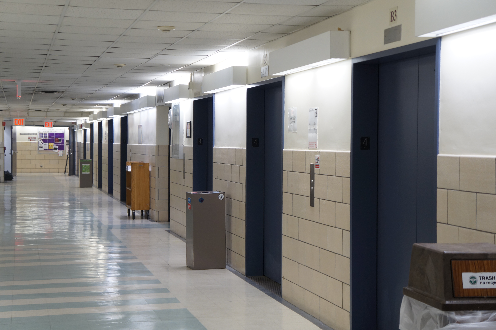

Seeing that the north building has many floors, elevators are needed daily to quicklky climb floors. However this leads to crowds of students. Quietness at Hunter to me seems like an weird concept considering the campus is usually filled with scholars. I aim to show different spots where I can represent the tranquility of the campus in a busy week day, in NYC.
 this is my link to my first page!! :D